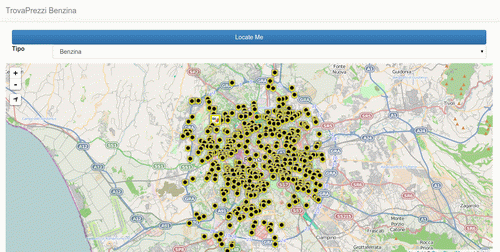

15 settembre, 2014 | di Andrea Borruso
Questo post non avrebbe bisogno di un testo o di un commento. E’ in fondo una comunicazione di servizio.
Le cose avvengono grazie al tempo che spendiamo per queste, alla crescita personale, all’evoluzione del contesto, agli incontri fatti, alla qualità delle persone. E questo è un anno che non dimenticherò.
Ringrazio l’Ing. Salvatore Cirone (dirigente dell’”Area 2 Interdipartimentale Sistemi Informativi Geografici, Infrastruttura Dati Territoriali Regionali e Cartografia”) e l’Ing. Agostino Cirasa (funzionario presso gli stessi uffici) per il dialogo di queste settimane e per l’immediata disponibilità all’autorizzazione, e Simone Cortesi che mi ha insegnato a passare la cera.

I servizi WMS da sfruttare per il ricalco, e i relativi metadati, dovrebbero essere quelle elencati qui: http://goo.gl/Hefwor
Qui invece la copia della lettera di autorizzazione. Tutto questo si innesta in un percorso iniziato proprio con OpenStreetMap qualche anno fa, e che sarà probabilmente soltanto una delle tappe previste in termini di apertura dei dati geografici da parte della Regione Siciliana.
Posted in Dati | 1 Comment »
3 settembre, 2014 | di Andrea Borruso
Sei anni fa scrissi un post, prima di partire per una settimana di piacere a Linosa; stavolta questo paradiso terrestre mi ha ispirato un post di ritorno.
Lo spunto di partenza di oggi è lo stesso di allora: creare per il mio smartphone una copia della cartografia digitale dell’isola, in modo che sia disponibile anche offline, visto che in loco la connettività è scarsa.
Sono passati sei anni, un’enormità dal punto di vista tecnologico, e le modalità per farlo sono adesso davvero tante. Anche per questa ragione non parlerò di soluzioni, ma darò spazio a quello che è un vero e proprio scoop giornalistico: l’isola di Linosa deve essere spostata!
Scopro questa cosa incredibile il 18 agosto, data del mio arrivo sul posto. Nelle prime ore noleggio uno scooter, sistemo i bagagli in casa e subito voglio fare il punto mappa. Perché l’alloggio è in una zona per me nuova, perché voglio scegliere dove fare il primo bagno, perché mi voglio fare un’idea della viabilità, ecc.
Accendo il ricevitore GPS del mio smartphone, aspetto che venga calcolata la mia posizione, faccio partire la mia app e mi rendo subito conto di essere stato spostato a est di diverse decine di metri. Perché “carta canta”, non ci sono dubbi, e se il mio smartphone mi fa vedere il pallino in una certa posizione, sarà il mio maledetto telefonino “roottato” che funziona male. Ho pensato anche che il problema fosse della mia cartografia, ma avevo generato di proposito due basi offline, da due fonti diverse (Bing Maps di Microsoft e OpenStreetMap, e su entrambe riscontravo lo stesso problema.
Riavvio il telefonino, salgo sulla moto per fare un primo giro, arrivo sul lungo mare, rifaccio il test precedente e non cambia nulla.

Preso dalla sconforto decido di fare una passeggiata e registrare un tracciato GPS, in modo che di ritorno a Palermo possa fare con calma un po’ di verifiche e capire che strani dati produce il mio cellulare (si usa più questa parola?). A registrazione terminata, voglio essere sicuro che tutto sia stato archiviato correttamente, apro la mia app di tracking in una zona coperta da connessione web e scopro che tutto sembra tornare a funzionare. Ma c’è una differenza, la mappa di base stavolta è quella del Geoportale della Regione Siciliana: che siano le altre basi il problema?
Ho potuto verificare la cosa, alcuni giorni fa, al ritorno da Linosa. Avevo infatti bisogno di una connessione e di un personal computer.
Ho creato una vista cartografica (leaflet.js + Plugins by Pavel Shramov + Leaflet.Sync) in cui mettere a confronto i tre layer cartografici citati, sui quali ho sovrapposto la registrazione del mio percorso GPS, che ho usato un po’ come cartina al tornasole.

Come si vede dallo screenshot di sopra, la traccia GPS (in blu) è correttamente posizionata sul base della Regione Siciliana, mentre è spostata di diverse decine di metri a est su Bing Maps. E lo stesso (vedi sotto) vale per OpenStreetMap.

Non poteva essere diversamente perché i dati OpenStreetMap derivano (almeno per la gran parte) probabilmente da un tracciamento sulla base Bing. La Microsoft infatti ha concesso da tempo il ricalco sul proprio layer satellitare per l’arricchimento del database OSM, ma qui purtroppo è entrato in gioco la propagazione dell’errore: la base Bing è (qui a Linosa) “registrata” male, e qualsiasi prodotto derivato erediterà questo problema.
La vista cartografica dinamica interattiva con cui potrete testare la cosa in autonomia è accessibile qui: http://tanto.github.io/spostalinosa/
Ho inserito anche un pinpoint fisso a centro mappa, in modo da fare anche confronti a occhio tra un elemento individuato sulle due tavole.
Non ho idea di come sia possibile che i dati della multinazionale contengano questo errore, ma di certo “c’è da spostare Linosa”. A chi mi posso rivolgere per segnalare la cosa?
I dati OpenStreetMap saranno corretti in pochissimo tempo, per quelli di Bing temo ci vorrà più tempo: che grande cosa che è la “mappa liberamente modificabile dell’intero pianeta“!
Ho fatto leggere il post in bozza a questa redazione e a qualche altro amico. Sono usciti molti spunti “vicini” al bel post di Sergio, di cui un po’ questo è un figlio casuale, e anche uno dei mille “casi d’uso”.
Voglio concludere proprio con tre elementi che ho raccolto:
- la mappa non è il territorio (me l’ha detto tempo fa Franco Farinelli e me l’ha ripetuto in questi giorni napo);
- la cartografia della PA italiana è spesso di alto livello, è una grande risorsa e bisogna liberarla. Alla mia regione chiedo di lavorare sul passaggio ad una licenza che consenta pienamente il riuso dei dati, dalla attuale CC BY-SA 3.0 IT a una CC BY 4.0;
- in ultimo l’invito a non credere acriticamente né ai nostri strumenti, né ai dati a cui accediamo tramite questi, ad alzare la testa dallo smartphone e camminare un po’ più con lo sguardo aperto e rivolto in tutte le direzioni (lo so, lo so, si vede che è un’autocritica
 ).
).
NdR: questo di Linosa non è un caso unico e isolato. Sembra che anche Matera sia da spostare.
Posted in Dati | 2 Comments »
28 luglio, 2014 | di Stefano Sabatini
L’Osservatorio Carburanti, introdotto con una legge del 2009 (art. 51, legge 99/2009), vuole essere uno strumento di trasparenza e garanzia della concorrenza tutelato e gestito dal Ministero dello Sviluppo Economico. Dal 2013 é obbligatorio per tutti i distributori sul territorio italiano comunicare e tenere aggiornati i prezzi praticati sul portale ministeriale (https://carburanti.mise.gov.it/OssPrezziSearch/): il decreto ministeriale del 15 Ottobre 2010 prescrive l’obbligo di comunicare il prezzo iniziale, il ritocco dei prezzi al rialzo e comunque un aggiornamento ogni 8 giorni dall’ultima comunicazione, e suggerisce una serie di dati da trasmettere su base volontaria. Le sanzioni previste dalla legge, convertite in euro, variano tra 516 e 3098 euro.
La comunicazione al Ministero avviene in tre modi:
- tramite portale web
- tramite sistemi convenzionati (gestiti dai concessionari autostradali o da imprese accreditate)
- tramite gestionali conformi alle specifiche ministeriali
Lato consumatore si dovrebbero aprire enormi possibilità per il monitoraggio dell’andamento dei prezzi e quindi del rispetto della concorrenza, poiché diventa sufficiente avere accesso alla rete per poter avere informazioni puntuali sui prezzi praticati dalle stazioni di rifornimento. Il mercato è attualmente composto dal portale ministeriale e dalle applicazioni create dalle imprese accreditate: il ministero tramite Infocamere contribuisce con OsservaPrezzi, una sorta di applicazione demo che mostra il potenziale di questo dataset (2.6 valutazione media sul Play Store), mentre tra le varie proposte permane ancora la storica PrezziBenzina (4.4 valutazione media sul Play Store).
La domanda che ci siamo posti quando abbiamo iniziato l’analisi del portale è la seguente: se il database dei prezzi è nato a garanzia di trasparenza e concorrenza, perché la piattaforma non prevede ancora il rispetto dei criteri stabiliti ad esempio dall’Agenda Digitale italiana? Possiamo fare qualcosa per contribuire al suo miglioramento?
La prima azione compiuta è stata l’analisi di come funziona dietro le quinte il portale del MiSE: con sommo piacere questo è costruito con tecnologie web al passo coi tempi ed il frontend (il “lato utente”) utilizza il framework Bootstrap. Questo teoricamente potrebbe garantire la navigabilità da piattaforme mobili, ma evidentemente si è lasciato che l’utente trovasse necessario l’utilizzo delle app.
L’API che fa dialogare la parte utente con il server è stata esplorata facilmente, permettendo perfino di documentarla parzialmente: l’unica azione per rendere il servizio disponibile in chiaro alla comunità sarebbe documentare le modalità di interrogazione e fornire l’accesso tramite chiavi agli sviluppatori interessati.
L’azione successiva si è svolta su due fronti: il primo è stato provare a fornire servizi utente facilmente fruibili, mentre il secondo è stato ricavare un dump completo del database in un dato momento per permetterne l’analisi a mo’ di big data.
Se l’API fosse ufficiale sarebbe utile che fornisse anche metodi per utilizzare i dati direttamente via JavaScript (JSONP) ma, purtroppo, ciò non è possibile al momento: si è reso necessario creare un ‘proxy’ fra i nostri esperimenti ed il servizio trasformando le nostre richieste da GET a POST via PHP, superando contemporaneamente le limitazioni di sicurezza che i nostri browser mettono in atto nei confronti delle richieste a domini diversi (cross-domain).
L’endpoint position, ad esempio, permette di ottenere tutti i distributori nell’intorno di un dato punto per un raggio di 10 chilometri: l’applicazione contenuta nella pagina distributori.html permette di consultare su mappa tutti i distributori intorno alla posizione scelta dall’utente (via doppio clic o tramite geolocalizzazione), mentre quella della pagina cheap.html evidenzia il distributore più conveniente nella stessa area.

Il dump ottenuto tramite simulazione delle richieste all’API copre tutti i distributori disponibili e viene trasformato in automatico dalla risposta JSON ad un database costituito di due parti: una tabella raccoglie la descrizione del distributore (marca, posizione, indirizzo,…), mentre l’altra raccoglie i prezzi di ognuno di essi. Le due tabelle sono legate tra loro da un identificatore trovato all’interno della risposta (il quale andrebbe a sua volta standardizzato e reso ufficiale per permettere incroci con altre basi di dati). Questo database è reso disponibile sia come file SQLITE sia come file SPATIALITE: quest’ultimo viene anche purificato dei distributori con coordinate non valide e può essere utilizzato per analisi spaziali con Qgis.
Noi continueremo ad estrarre informazione e valutarla per mostrare cosa può significare la disponibilità aperta dei dati: più persone ci saranno a consultare ed utilizzare i dati dell’Osservatorio, maggiore trasparenza ci sarà nella gestione e nel monitoraggio del mercato dei carburanti. I segnali che provengono ci fanno credere di stare seguendo una strada giusta e con pochi accorgimenti in una fase futura di apertura tutti ne potranno trarre beneficio.
Il repository GitHub è localizzato all’indirizzo https://github.com/sabas/carburantiMiSE; l’istanza corrispondente, dalla quale scaricare anche i dump più recenti, è all’indirizzo http://toolserver.openstreetmap.it/carburantiMiSE/
Posted in Dati | 2 Comments »
10 gennaio, 2014 | di Giovanni Allegri

Abbiamo deciso di pubblicare la traduzione di un recente articolo di Serge Wroclawski, “Why the World Needs OpenStreetMap“, perché ci sembra importante riconoscere e sottolineare il valore di OSM al di là della sua utilità pratica e della sua gratuità. Ci scusiamo per eventuali inesattezze, non siamo traduttori professionisti!
Perché abbiamo bisogno di OpenStreetMap
Ogni volta che parlo con qualcuno di OpenStreetMap, inevitabilmente mi viene chiesto “Perché non usi Google Maps?”. Da un punto di vista strettamente pratico si tratta di una domanda ragionevole, però la questione non riguarda solo l’utilità (di tale scelta), ma che tipo di società vogliamo. Ne ho parlato nel 2008 in una conferenza su OpenStreetMap che ho tenuto al primo convegno MappingDC. I concetti che riporto qui sono gli stessi, ma trattati in maniera più estesa.
Nell’800 le persone avevano il problema del tempo, non in termini di tempo a disposizione, ma di che ora fosse. Gli orologi esistevano già, ma ogni città aveva il suo “tempo locale”, che si sincronizzava sugli orologi della città, o più spesso, le campane delle chiese. L’orario delle ferrovie, e infine il Tempo Medio di Greenwhich, ha soppiantanto gli orari locali e oggi la maggior parte della gente considera il tempo come qualcosa di universale. Negli Stati Uniti questo è avvenuto inizialmente grazie all’adozione del tempo standard da parte delle Ferrovie e successivamente delle università e delle grandi imprese.
L’equivalente attuale del dilemma del tempo è la posizione geografica, e diversi soggetti stanno cercando di diventarne il riferimento assoluto. Google spende un miliardo di dollari l’anno per mantenere le proprie mappe, senza considerare il miliardo e mezzo speso per comprare Waze. Non è certo l’unica azienda che sta cercando di prendersi tutto lo spazio, visto che anche Nokia si è comprata Navtek e TomTom e Tele Atlas stanno cercando di fondersi (in realtà TomTom ha già acquisito TeleAtlas, N.d.T.). Tutte queste aziende vogliono diventare il riferimento assoluto di ciò che è posizionato sulla Terra. Questo perché ciò che ha una posizione geografica è diventato un grande business. Con i GPS in ogni auto, ed uno smartphone in ogni tasca il “mercato” di chi vuole dirti dove sei e dove devi andare è diventato feroce.
Con tutte queste aziende perché c’è bisogno di un progetto come OpenStreetMap? La risposta è semplice, perché in una società nessuna azienda dovrebbe avere il monopolio sui luoghi, così come nessuna azienda ha avuto il monopolio del tempo nell’800. I luoghi sono un bene comune, e dando ad una singola entità tutto questo potere gli viene dato non solo il potere di dirti la tua posizione, ma anche di poterla manipolare. Ci sono tre aspetti in questione: chi decide cosa deve essere visualizzato sulla mappa, chi decide dove ti trovi e dove dovresti andare, e la privacy personale.
Chi decide cosa debba essere visualizzato su una mappa di Google? Ovviamente la risposta è Google. Mi è capitato di affrontare la questione durante un incontro con un’amministrazione locale nel 2009: erano preoccupati all’idea di usare Google Maps sul loro sito web perché Google decide quali aziende/attività commerciali mostrare. Avevano ragione ad essere preoccupati dal momento che un’amministrazione pubblica deve rimanere imparziale, e delegando le proprie mappe ad un soggetto terzo si trovano a cederne anche il controllo. E’ inevitabile, se non lo stanno già facendo, che Google cerchi di monetizzare le ricerche geografiche, dando priorità a certi risultati rispetto ad altri. Ad esempio, sarà una coincidenza ma se provo a cercare “colazione” vicino a casa mia, il primo risultato è Ristoranti SUBWAY®. Google non è certo l’unico distributore di mappe, è solo un esempio. Il punto è che quando si usa un qualsiasi provider di mappe, gli viene dato il potere di decidere quali siano gli elementi a cui dare risalto, o quali non debbano essere proprio mostrati.
La seconda questione riguarda il posizionamento. Chi definisce cosa sia “vicino”, o se sia meglio andare in una certa direzione piuttosto che un’altra? Questo problema è stato argomento di un articolo dell’ ACLU (n.t.: Unione americana per le libertà civili) dove veniva discusso l’algoritmo utilizzato da un certo servizio di mappe, il quale nel calcolo di un percorso (in auto, in bici o a piedi) prendeva in considerazione la pericolosità o la sicurezza del contesto. C’è da chiedersi chi stabilisce se un luogo sia sicuro o meno, o se piuttosto la parole “sicuro” sia soltanto un termine in codice per riferirsi a qualcosa di più sinistro. Ad oggi, Flickr colleziona informazioni relative agli spazi geografici sulla base delle fotografie, che vengono esposte tramite un’API pubblica. Utilizzando queste informazioni possono suggerire tags per le nostre fotografie, ma i cluster geografici ottenuti dalle loro elaborazioni potrebbero essere usati per controllare e manipolare qualsiasi altra informazione, dai pattern del traffico ai prezzi degli immobili, perché quando un provider di mappe diventa sufficientemente grande, diventa una fonte di “verità”.
Infine, queste società sono incentivate a raccogliere informazioni su di noi con modalità che potrebbero non piacerci. Quando utilizziamo i loro servizi, sia Google che Apple acquisiscono informazioni sulla nostra posizione. Possono usare questi dati per migliorare l’accuratezza delle mappe, ma Google ha già annunciato che intende usarla per analizzare la correlazione tra le ricerche che facciamo e i luoghi dove ci dirigiamo. Con 500 milioni di telefoni Android si tratta di un enorme quantità di informazioni, ottenute a livello individuale, sulle abitudini della gente sia che stia facendo una passeggiata, che stia andando a lavoro, dal dottore o, magari, che stia partecipando ad una protesta. E’ evidente che non si possono ignorare le implicazioni sociale che comporta la disponibilità di così tanti dati in mano ad una singola azienda, indipendentemente da quanto si dichiari benevola. Aziende come Foursquare utilizzano il mezzo della “gamification” per coprire quello che di fatto è un’opera di acquisizione di dati, e anche Google è entrata nella partita della “gamification” con Ingress, un gioco che sovrappone un mondo virtuale a quello reale e porta gli utenti a raccogliere foto e informazioni stradali con l’obiettivo di combattere, o favorire, un’invasione aliena.
Visualizza mappa ingrandita
Ora che abbiamo identificato i problemi, possiamo esaminare come OpenStreetMap li risolva tutti. In termini di contenuti geografici, OpenStreetMap è sia neutrale che trasparente. OpenStreetMap è una sorta di wiki che chiunque al mondo può editare. Se un negozio manca da una mappa, può essere aggiunto dallo stesso esercente o magari da un cliente. Per quanto riguarda la visualizzazione cartografica, ogni persona o azienda può crearsi la mappa come vuole, tuttavia la principale mappa su OpenStreetMap.org utilizza software cartografico FLOSS (Free/Libre and Open Source Software) e un foglio di stile (per la vestizione cartografica, N.d.T.) disponibile con una licenza di pubblico dominio, da cui chiunque può partire per costruirsene uno proprio. In altre parole, chiunque ne abbia bisogno può crearsi la propria mappa basandosi sugli stessi dati.
Analogamente, mentre i router (i software per il calcolo dei percorsi ottimali, N.d.T.) più popolari di OpenStreetMap sono FLOSS, se un’azienda decidesse di usare un’altra tecnologia, un utente può sempre utilizzare il proprio software e potrebbe facilmente confrontare i risultati, ottenuti dagli stessi dati, per verificare eventuali anomalie.
Infine, un utente può scaricare liberamente tutti o parte dei dati di OpenStreetMap per utilizzarli offline. Questo significa che è possibile usare i dati di OpenStreetMap per navigare senza dover comunicare ad alcuno la propria posizione.
OpenStreetMap rispetta le comunità e rispetta le persone. Se non stai già contribuendo a OSM, valuta la possibilità di farlo. Se già contribuisci, grazie.
(Serge Wroclawski “Why the World Needs OpenStreetMap“, CC-BY-SA)
Posted in Entropia | 5 Comments »
21 maggio, 2013 | di Giovanni Allegri

iD Editor
Da alcuni giorni, come reso noto dalla notizia di lancio, sulle pagine di OpenStreetMap è attivo un nuovo strumento per l’editing online delle mappe. L’ultimo arrivato, nella grande famiglia degli editor per OSM, sia chiama iD e andrà ad affiancare il buon vecchio Potlach, noto a chiunque abbia fatto un po’ di inserimenti e di modifiche sui dati OSM.
Si tratta di uno strumento che, a fronte della leggerezza e della chiarezza a livello di interfaccia utente, nasconde una discreta dose di tecnologia, tutta Open Source, nata dal lavoro volontario di alcuni sviluppatori, e proseguita con un notevole sostegno economico (parte dei 545.000 $ offerti dalla Knight Foundation), sotto il coordinamento di MapBox.
L’aspetto più evidente di iD, e che ne ha motivato la realizzazione, è un approccio “assistito” all’editing. Ogni azione viene guidata tramite suggerimenti e le scelte degli oggetti, e delle relative proprietà, da associare agli elementi geometrici inseriti, viene semplificata con l’ausilio di moduli d’inserimento intuitivi e facilmente comprensibile anche ai meno esperti, lasciando tuttavia la libertà di integrare le informazioni di base con tag più avanzati.
Ma cos’è che ha spinto la Knight Foundation e MapBox a finanziare questo progetto? La notizia ha colto l’attenzione anche di testate giornalistiche non del settore quali Mashable e TechCrunch, ed entrambi hanno voluto sottolineare la sfida alle altre realtà commerciale del mapping online, Google in primis. In effetti la mossa operata con l’introduzione di iD ha reso ancor più evidente il mix di qualità del progetto OpenStreetMap : open data, strumenti tecnologici efficaci e robusti, crowdsourcing a scala globale, opportunità commerciali. Le ho elencate in quest’ordine non per caso.
La scelta, operata fin dall’inizio, di associare al dato OSM una licenza aperta (inizialmente CC-BY-SA, poi trasformata in ODbL) è stata senz’altro il carburante che ha dato il via al tam-tam globale, garantendo agli utenti una totale trasparenza sull’impiego dei dati liberamente forniti. Questa caratteristica, oltre ad essere motivante per molti utenti, è unica tra i progetti di mapping crowdsourced a scala globale (Google Map Maker, per dirne uno, i dati se li tiene ben stretti!).
La totale trasparenza e il pubblico dominio hanno fornito una forte spinta motivazionale, tanto all’utente amatore quanto agli sviluppatori e ai sistemisti. Lo sviluppo di un set di tecnologie ben focalizzate ed efficaci in grado di gestire tutte le fasi di vita del dato, e di intercettare e rispondere ad un’utenza estremamente variegata (dall’azienda, all’operatore in aree di emergenza, al byker appassionato), ha avviato il circuito virtuoso. Ecco che dal computer di Steve Coast, OSM ha invaso il mondo.
Con quali soldi è stato possibile realizzare tutto ciò, e chi sostiene oggi OSM? Qui sta l’emblematicità di OSM, e che io ritrovo esemplificata nella nascita di iD: un progetto nel quale tutti possono trarre benefici, dagli utenti appassionati alle aziende (fino alla scala di Foursquare, Evernote, MapQuest, la stessa MapBox e tante altre). E più tutti ne traggono beneficio, più ognuno è disposto a contribuire: l’utente a mappare, l’azienda a fare il proprio business col supporto dei dati OSM e a sostenere il progetto (se l’azienda è saggia e lungimirante!). OSM sarà un caso un po’ unico, soprattutto di questa portata, ma dimostra, insieme ad altri progetti simili (basta pensare a Wikipedia) che è un processo realizzabile e sostenibile, con un modello di business non utopico.
In sintesi, e semplificando un po’, un buon editor rende la vita più semplice all’utente, e magari ne attrae di nuovi -> MapBox può contare su una maggiore base di contributori e di dati -> MapBox sostiene lo sviluppo di iD
Chissà se un giorno riusciremo a innescare un processo virtuoso simile anche per gli Open Data in Italia
Buona mappatura a tutti con iD!
Giovanni Allegri
Posted in Strumenti | No Comments »